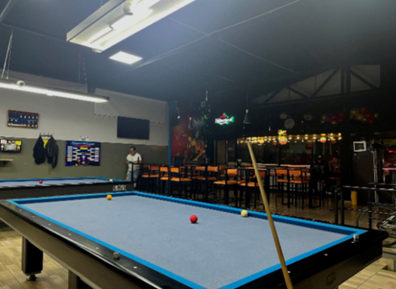
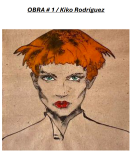
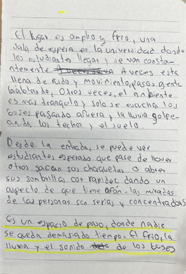
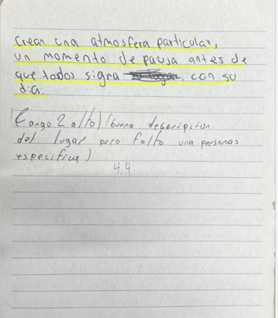
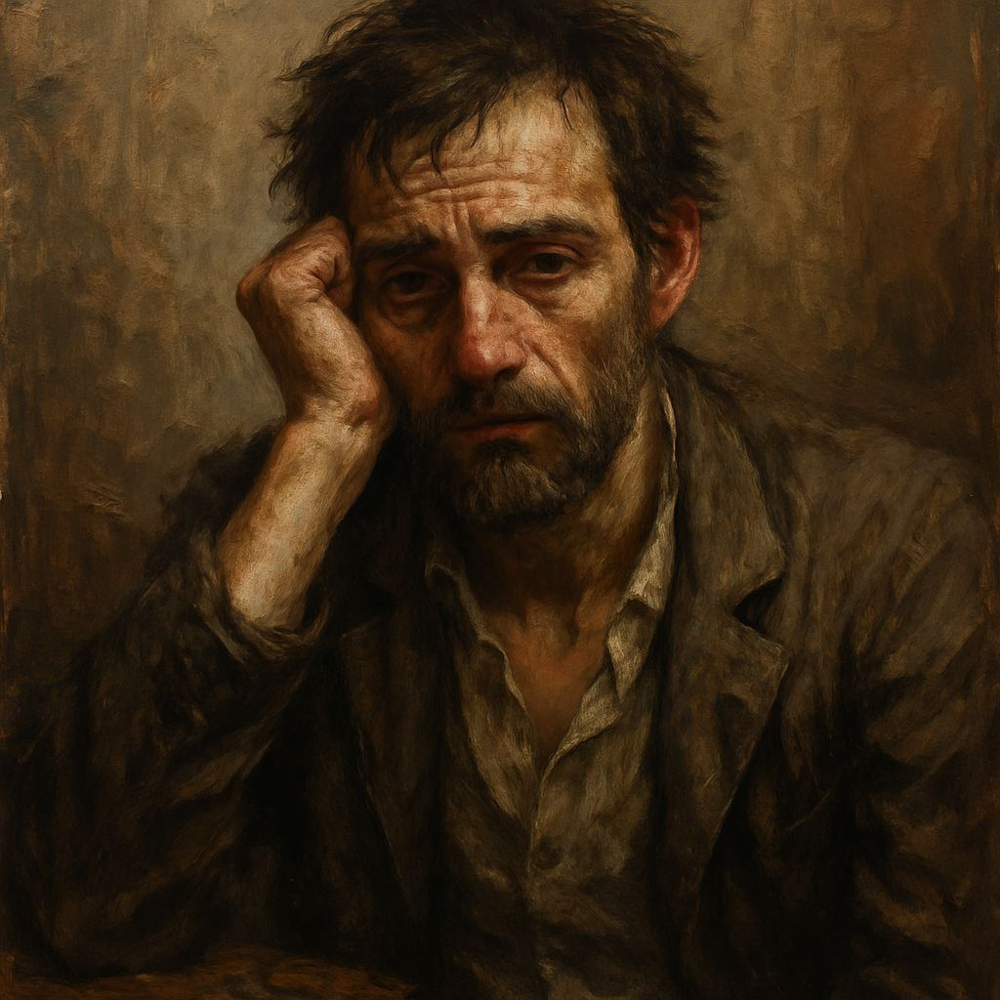

En la mesa se puede notar que tiene una textura suave, como si fuera de tela. Su color es un azul claro un poco opaco, donde los bordes se ven con una tonalidad más intensa que el interior. Sobre la mesa hay tres bolas, por lo que se puede deducir que la modalidad de juego es tres bandas. El material de la mesa es madera, el mismo material del taco, el cual permite interactuar con el juego. Más allá de la descripción de los materiales o la modalidad de juego, hablemos de lo que se puede experimentar en esta mesa de billar. Aquí se viven varios sentimientos como felicidad, rabia, decepción, entre otros. Pero personalmente, este espacio me permite despejarme un poco de la realidad, especialmente si estoy en buena compañía. Mientras jugamos, podemos expresarnos de una forma en la que nos entendamos, donde podamos reírnos del otro (humillarlo, pero con cariño). Es simplemente pasar el rato, con unas polas y buena conversación.
La obra expresa una mirada seductora, donde los ojos de color verde ayudan a resaltar y penetrar al que la esté viendo. El pelo color naranja zanahoria ayuda a percibir que ella está desorganizada, como si se hubiera acabado de levantar, pero le da un toque de seguridad como si estuviera en un entorno de modelaje donde le ayuda la postura de los trazos que da a percibir si estuviera caminado de un lado a otro, como si estuviera en una pasarela donde oliera a ropa nueva, donde solo estuviese gente con estilo e importantes. Esos labios rojos intensos que se asemejan a una flor roja cautivadora que cualquier hombre quisiera besar. Lo obra puede expresar muchas cosas de moda y belleza, pero su mirada es lo más importa porque es la que permite dar un punto más profundo como las que mencioné al principio.
Nombre: Samuel Descripción física: Samuel es un tipo normal, ni muy joven ni muy viejo, como un boceto en proceso. Es flaco, con la cara que parece un mapa de tanto vivir cosas. Su piel blanca brilla como la luna en los lugares oscuros que le gustan. Su pelo es negro y un poco loco, a veces mojado, como si el mundo fuera una ducha gigante. Sus ojos, que antes eran fiesta, ahora están tristes, como si siempre estuviera pensando en algo. Descripción de su mente: Samuel es un hombre roto, porque no está el amor que quiere. Su cabeza viaja entre momentos alegres y el mal sabor de la decepción. Busca estar bien tomando alcohol, para que cada vez el dolor se vaya. Es triste, piensa mucho y a veces se hace daño. Pero, en su corazón hay un poco de esperanza, quiere ser mejor. Frases: 1. Es del tipo de persona que ahoga sus penas en el fondo de un vaso. 2. Es del tipo de persona que vive en un pasado idealizado y no acepta el presente. 3. Es del tipo de persona que, a pesar de todo, sigue esperando un milagro. Cuestionario de Proust 1. ¿Principal rasgo de su carácter? La melancolía. 2. ¿Qué cualidad aprecia más en un hombre? La sinceridad. 3. ¿Y en una mujer? La comprensión. 4. ¿Qué espera de sus amigos? Lealtad sin preguntas. 5. ¿Su principal defecto? Aferrarse al pasado. 6. ¿Su ocupación favorita? Escribir cartas que nunca enviará. 7. ¿Su ideal de felicidad? Un amor que no termine. 8. ¿Cuál sería su mayor desgracia? Olvidar lo que sintió. 9. ¿Qué le gustaría ser? Un poeta maldito. 10. ¿En qué país desearía vivir? Francia, en una buhardilla con vista a la lluvia. 11. ¿Su color favorito? Azul grisáceo. 12. ¿La flor que más le gusta? Lirio negro. 13. ¿El ave que prefiere? Cuervo. 14. ¿Sus autores favoritos en prosa? Charles Bukowski y Haruki Murakami. 15. ¿Sus poetas? Pablo Neruda y Alejandra Pizarnik. 16. ¿Un héroe de ficción? Jay Gatsby. 17. ¿Una heroína? Madame Bovary. 18. ¿Su compositor favorito? Chopin. 19. ¿Su pintor preferido? Edward Hopper. 20. ¿Su héroe de la vida real? Los escritores bohemios que nunca dejaron de soñar. 21. ¿Su nombre favorito? Isabela. 22. ¿Qué hábito ajeno no soporta? La hipocresía. 23. ¿Qué es lo que más detesta? 24. La indiferencia. 25. ¿Una figura histórica que le caiga mal? Napoleón Bonaparte. 26. ¿Un hecho histórico que admire? La Revolución Francesa. 27. ¿Qué don de la naturaleza desearía poseer? La capacidad de olvidar a voluntad. 28. ¿Cómo le gustaría morir? En una habitación llena de libros y vino. 29. ¿Cuál es el estado más típico de su ánimo? Nostalgia perpetua. 30. ¿Qué defectos le inspiran más indulgencia? La impulsividad del que ama demasiado. 31. ¿Tiene un lema? "Brindo por el olvido, que es la peor de las mentiras." Preguntas adicionales: 31. ¿Cuál es el recuerdo que más le atormenta? La última vez que vio a la persona que amaba, sin saber que sería la última. 32. ¿Si pudiera cambiar un solo momento de su vida, cuál sería? El día en que dejó ir a su gran amor sin luchar por él.
Título: Fue Artista: Soda Stereo Enlace: [https://www.youtube.com/watch?v=mxtZdyBa0wY] Letra: "Me embriagué hasta el vacío Con tu miel venenosa Fuiste mi sol Y el hastío nos llevó al desengaño" Análisis de la Letra: La canción emplea una descripción metafórica del amor y la perdición. "Miel venenosa" sugiere la dulzura adictiva de una relación que se convierte en una maldición. "Me embriagué hasta el vacío" refuerza la idea de una autodestrucción a través del amor y el alcohol. Relación con el Personaje: Samuel ve en esta canción un reflejo de su propia vida. El amor que alguna vez fue su refugio se convirtió en su condena. Cada vez que escucha esta canción, siente que es su historia cantada en versos: un amor embriagador que lo consumió y lo dejó vacío. La música es su forma de revivir el pasado y, al mismo tiempo, su castigo autoimpuesto.
La Ciudad y el Espacio: Samuel vive en una ciudad grande pero descuidada. Las calles están llenas de grietas y baches, con basura acumulada en algunos rincones. Hay tráfico constante, especialmente en las avenidas principales, donde los automóviles tocan la bocina con impaciencia. La gente camina rápido, con la mirada baja, como si cada día fuera una rutina repetitiva. Hay restaurantes pequeños con letreros gastados y bares oscuros que abren desde temprano. En algunos parques, los árboles están descuidados y los bancos tienen grafitis o están rotos. También hay animales callejeros, sobre todo perros y gatos que buscan comida entre los restos de los mercados. El ambiente tiene un olor fuerte a humedad, cigarrillo y comida frita. A veces, después de la lluvia, el aire se siente un poco más fresco, pero generalmente está contaminado. El clima es frío y nublado la mayor parte del tiempo, con una luz tenue que apenas ilumina las calles. Los edificios son antiguos y algunos están en mal estado, con paredes manchadas por el tiempo y ventanas cubiertas de polvo. Hay muchas viviendas pequeñas y apartamentos estrechos donde la gente vive con nada. Los letreros de neón de algunas tiendas y bares son lo único que da un poco de color en las noches. Las personas en la ciudad son reservadas y distantes. La mayoría viste ropa sencilla y en colores oscuros, abrigos gastados y bufandas gruesas para protegerse del frío. Casi nadie se detiene a hablar con extraños, y las conversaciones son cortas y directas. El Refugio de Samuel: Samuel vive en un apartamento pequeño y desordenado. La sala tiene pocos muebles: un sofá viejo con manchas de cigarrillo, una mesa de madera llena de papeles y botellas vacías. Hay estanterías llenas de libros, algunos en buen estado y otros con las páginas dobladas o subrayadas. La luz es escasa porque casi siempre mantiene las cortinas cerradas. Su habitación es igual de caótica. La cama está deshecha, con sábanas arrugadas y ropa tirada por el suelo. En una esquina hay un escritorio con una libreta y un cenicero lleno. El olor en el apartamento es una mezcla de alcohol, tabaco y humedad. En la cocina, casi no hay comida fresca, solo botellas, paquetes abiertos y platos sin lavar. Samuel apenas se preocupa por mantener el lugar limpio. Para él, su apartamento no es un hogar, sino un sitio donde se encierra a beber y recordar.
 Samuel, un hombre de mediana edad que está atrapado en el alcoholismo por la tristeza de un amor perdido, tratando de sobrevivir en una ciudad fría y desolado, en un apartamento pequeño donde se reflejada su tristeza por pensar en la mujer que perdió, escuchado música que lo llevan al pasado, la vida de él va en descenso, es un circulo de cosas malas, pero cansado de eso entra en un proceso de sanación y de reconciliación, donde se va a ver afectado por sus adiciones que lo van a perseguir como su sobra, acostumbrado a tener una rutina de estar ahogado en sus malos hábitos. Lista de secuencia: 1. Solo bebe licor en su apartamento recortado su amor, es escucho la música que lo consume. 2. flashbacks de la ruptura y como inicio su amor. 3. llamadas y mensajes donde expresa su dolor. Estructura Narrativa: La historia se narra de manera lineal, mostrando el presente de Samuel, pero incluye varios flashbacks cortos que explican el origen de su tristeza y su relación fallida.
Hoy es un día especialmente diferente, un día lluvioso donde uno pensaría que los ánimos estarían bajos caminando por la calle 61 cerca de la entrada de la universidad me llamo la atención un grupo que estaba jugando voleibol, justo al frente de la salida buscando escampar de la lluvia mientras jugaban como si estuvieran disfrutando del día más soleado del año hasta que la lluvia arrecia tanto que los hace irse, definitivamente el suceso más peculiar para una semana especialmente pesada. Entrando a la universidad noto el silencio de los torniquetes típico de la tarde ya que muy pocas personas son las que siguen en la universidad en las horas de la tarde, al caer el sol es casi desértico este lugar que por las mañanas es un mar de gente. Un silencio muy cómodo fue llevándome hacia una pequeña sala, justo al lado de las escaleras eléctricas vacías nadie estaba subiendo por estas, junto a toda esta atmosfera se suma un sentimiento de soledad. Sigo mi camino para sentarme en la pequeña sala, me llama una silla como de espectador en un partido de futbol, observando como diferentes grupos entran a una jungla de personalidades donde se puede distinguir a las personas por la ropa: medios con ropa ancha y cómoda, usualmente con muchos bolsillos, modas con esta ruptura de colores y formas, industrial con sus características maquetas incomprensibles y sus carpetas gigantes, gastronomía de punta en blanco siempre por la mañana y por la tarde pareciendo un cuadro de arte abstracto y así podríamos seguir carrera tras carrera. Mi observación se detiene cuando llega una joven de aproximadamente de 21 o 19 años, traía pelo corto y un gabán de color crema, medía cerca de un metro y medio, llevaba lentes redondos y unos zapatos Converse, daba justo las vibras de la encarnación de Ninja Slayer. Junto a ella un joven alto que rondaba el metro con ochenta, vestía una chaqueta impermeable de color blanco con negro, jean azul celeste, tenis blancos, y su cabello ondulado cuidado con estricta rigurosidad, automáticamente solo pude pensar en Spike Spiegel... al principio pensé que venían solos, pero cuando vi como la chica corrió a tomarle de la mano me di cuenta, me impresiono ver como personas tan incompatibles a mi percepción estaban juntos. Rompiendo el silencio que tan cómodo me tenía me di cuenta de la hora, me impresiono que llegando una media hora antes. En ese momento donde mi atención la consumió este maravilloso entorno de soledad y quede atrapado tanto así que llevaba media hora tarde para mi clase, tome mis cosas corriendo rompi ese silencio que tanto ame en su momento y todo ese ambiente de tranquilidad se convierte en una carrera contra el tiempo. Llegó al apartamento, se quitó la chaqueta y se sentó en la cama. Todo seguía igual. Pero de repente se paró y abrió las cortinas. Entró un poco de luz. No cambió nada, pero el cuarto ya no se veía tan muerto.
Samuel se levantó con dolor de cabeza otra vez, no sabía si era por todo lo que tomó anoche o porque ya no dormía bien desde que ella se fue. Había botellas por el suelo, colillas tiradas por todos lados y la misma canción sonando desde el equipo viejo que no apaga nunca me embriagué hasta el vacío con tu miel venenosa esa frase le daba vueltas todo el tiempo. El apartamento estaba oscuro, todo desordenado. Olía raro, como a cigarrillo, trago y algo de humedad Samuel ya no hacía mucho solo se levantaba, fumaba, escuchaba música y escribía cosas en papeles sueltos que luego botaba. Su vida se convirtió en una rutina sin sentido. Ese día sin saber por qué, salió. Se puso la chaqueta, metió las manos a los bolsillos y caminó por la ciudad. Todo le parecía igual, las calles con basura, gente caminando rápido sin mirar a nadie, carros pasando contantemente. Camino sin rumbo terminó pasando por lugares que le dolían, el café donde tomaban algo cada sábado, el parque donde se besaron por primera vez, incluso por el bar donde bailaron en su cumpleaños. Todo eso seguia ahí, pero ella no. Y justo ahí la vio. Estaba sentada con alguien, riéndose. No parecía triste ni nada. Samuel se quedó parado mirándola un momento pero no se atrevió a decir nada. Sintió algo extraño en el pecho, como rabia, tristeza y resignación todo al tiempo. Volvió a su casa sin hablar con nadie. El apartamento estaba igual, tal vez un poco más frío. Se quitó los zapatos miró las cortinas cerradas como siempre y después de unos segundos se acercó y las abrió. Entró la luz, no cambió todo, pero por lo menos se vio distinto. Pasaron las horas mientras Samuel hacía nada más que beber y escribir en sus papeles. No sabía si alguna vez saldría de aquel vacío, aunque una pequeña parte de él, en el fondo decía sí, todavía quería intentarlo, aunque no supiera cómo. Al siguiente día se levantó un poco más temprano. El dolor de cabeza continuaba, aunque esta vez lo intentó ignorar. Abrió la ventana para que entrara aire fresco y la luz del sol. La ciudad tenía un aspecto distinto a la luz del día, pero igual de frío. Decidió salir otra vez, pero esta vez con intención de caminar más aún, con la intención de tratar de pensar en algo distinto. Caminó sin rumbo, observando a la gente en la rutina del día, los niños que jugaban, los vendedores ambulantes, las parejas que caminaban de la mano. Todo le parecía distinto, como si él fuera el que se encontrara fuera del tiempo. Se sentó en una banca, sacó el cuaderno y comenzó a escribir. No ahora cartas, sino palabras sueltas, pensamientos y sentimientos. Comprendió que debía poner en orden su mente, y aprender a entender qué había sucedido con él o con ella, con esa relación que lo había aniquilado. Pensó en todas esas promesas que se hicieron en los ensueños que compartieran. Se cuestionaba si ella también sufriría o por el contrario lo había olvidado, si tal vez alguna vez había llegado a recordarle con amor. Las palabras se vaciaban, aunque le dolían. Era como haber extraído todo a golpes. No sabía cuánto tiempo había permanecido escribiendo, pero cuando por fin alzó la vista la tarde caía y las luces de la ciudad comenzaban a encenderse. Decidió volver. Aquella noche probó a dormir, sin música, sin bebida, fue difícil, por lo menos pudo descansar un poco. Los días, fueron una especie de montaña rusa, entre momentos de lucidez y momentos de caída al abismo. Samuel comenzó a salir más, a andar por la ciudad, a buscar refugio en esos espacios que en su momento disfrutaba. Retomó el café, el parque, el bar, pero esta vez solo, sin ella. En el bar ve viejas caras que apenas le saludan. Se sienta en la barra, pide una copa y se queda mirando la botella, recordando aquello que ya no tiene, tomando conciencia de que no podía seguir así que el alcohol no le iba a devolver lo que ya no tiene. Un día mientras caminaba, escuchó canciones que salían de la radio de un auto estacionado ésa era la misma que tantas veces lo había atormentado, Me embriagué hasta el vacío con tu miel venenosa. Apretó los ojos y se dejó llevar de las emociones, no de tristeza sino de aceptación, de tener que aceptar que esa historia había terminado y que él debía empezar a vivir de nuevo. Transcurrieron las semanas. Samuel comenzó a cambiar poco a poco, abandonó casi por completo el alcohol, se puso a escribir en serio dándole paz a su mente donde podía estar rodeado de libros y de gentes que amaban la lectura como él. Su vida seguía siendo un poco difícil, pero con mas claridad, porque existía una esperanza, una fuerza que empujaba a continuar. Hasta que un día mientras ordenaba libros encontró uno que le hizo recordar a ella, un libro de poemas su poeta preferido. Lo abrió y leyó algunos poemas que le recordaban a ella. Ya no sintió dolor sino nostalgia. Samuel no ignoraba que ese vacío que sentía no se iba de la noche a la mañana pero podía hacer cosas nuevas para poder seguir adelante.